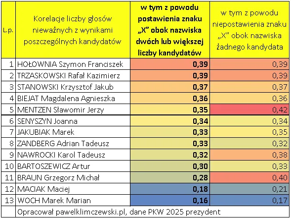
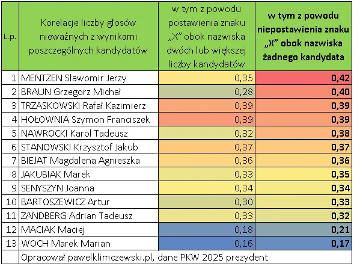

O czym świadczy liczba głosów nieważnych i czego nie robią prokuratorzy?
W Polsce wybory odbywają się w około 30 tysiącach lokali wyborczych. W każdym takim lokalu zasiada komisja wyborcza dbająca o prawidłowy przebieg wyborów. Zasadniczo chodzi o to, aby nie dopuścić do fałszerstw mogących mieć różne postacie. Najłatwiejszym do wykrycia jest "omyłkowe liczenie" głosów. Głosy na kandydatów X,Y,Z rozkłada się na osobne sterty i potem je przelicza. Jeśli w komisji są przytomni reprezentanci wszystkich partii to łatwo zostanie wykryte ułożenie głosu na X na stercie Y lub błędne przeliczenie poszczególnych stert głosów. Każde stronnictwo ma prawo liczyć i weryfikować. Jeśli jest zgoda, liczby głosów trafiają do protokołu wyborczego i wędrują do centrali, gdzie są sumowane.
Ale to tylko jeden z możliwych scenariuszy powstawania "błędów", pozostałe błędy leżą po stronie samych głosujących i w polskim systemie są protokołowane jako dwie sytuacje.
A/ gdy wyborca stawia krzyżyk przy więcej niż jednym kandydacie
B/ gdy wyborca nie stawia krzyżyka przy żadnym z kandydatów i wrzuca pustą kartę wyborczą
W ostatnich wyborach prezydenckich w pierwszej turze takich głosów oddano:
1. Z powodu postawienia znaku „X” obok nazwiska dwóch lub większej liczby kandydatów = 25 574 głosów
2. Z powodu niepostawienia znaku „X” obok nazwiska żadnego kandydata = 60 239 głosów
W poszczególnych lokalach wyborczych odsetki takich głosów są bardzo różne, od ułamków promila do kilkudziesięciu procent.
Średnie w Polsce to odpowiednie 0,13% w wersji A oraz 31% w wersji B.
Niby nie mało, ale razem to prawie 90 tysięcy głosów. W obu sytuacjach możemy założyć, że w przypadku A to ludzkie roztargnienie, a w przypadku B to np. chęć pokazania systemowi "że mamy system gdzieś" itp. motywacje. Ten drugi to wariant nieszczęśliwy powstający z ignorancji takiego bojownika z systemem. Lepiej by on zrobił dając ważny głos na dowolnego kandydata niszowego, wtedy siła kandydatów systemowych, liderów listy, by zmalała, bo mianownik ułamka zwycięzcy byłby większy o ten jeden głos, tymczasem taki głos trafia do kosza jako nieważny i wynik lidera zwyżkuje z powodu mniejszego mianownika.
Wróćmy do samego procesu liczenia głosów. Poza prawdziwymi zachowaniami wyborców unieważnienia głosów jest możliwe poprzez oszustwa wyborcze w samej komisji wyborczej. Wiem, że to możliwe, bo przez wiele lat z rzędu osobiście miałem na to 100 % dowód. Poza mną były w całej Polsce rzesze osób świadczące tak samo. W wielu wyborach oddawałem głos na swego kandydata, po czym następnego dnia rano w kopii protokołu na drzwiach komisji ten kandydat miał okrągłe zero głosów. Jak to jest możliwe? A bardzo prosto. Podczas liczenia głosów na mojej karcie z głosem na kandydata Y ktoś z komisji dopisywał drugi krzyżyk przy dowolnym kandydacie i po sprawie. Dziś, gdy coraz więcej ludzi angażuje się w pracę przy wyborach, jest to coraz trudniejsze, bo strony pilnują się wzajemnie, aby członkowie komisji nie mieli podczas liczenia długopisów w garści.
Zatem co robić, gdy demokracja dojrzewa i już stare numery w gronie samych swoich nie przechodzą?
Otóż jest wariant B, gdzie długopis jest niepotrzebny, ale jest potrzebna pusta karta do głosowania, towar rzadki, ale dostępny. W trakcie liczenia wystarczy kartę z głosem na Y schować gdzieś za lewą pazuchą, a za prawej pazuchy dyskretnie wyjąć pustą kartę i uzupełnić brak, wtedy ilość kart wydanych i tych liczonych w urnie się zgadza i jest OK, a nasz głos staje się nieważny, a właściwie znika za pazuchą demokraty, europejczyka. Co ciekawe, nie ma tu znaczenia, czy karta miała odpowiednie pieczątki, czy nie, więc ksero też wchodzi w grę! Jeśli zostanie wykryte ksero oznacza to niezbicie, że przyniósł je wyborca!
W praktyce są to oszustwa trudne do udowodnienia, z drugiej strony statystyka daje nam bardzo silne metody, aby znajdować mocne poszlaki takich działań. Tu trzeba podkreślić, że nietypowy, skrajny rozkład głosów w poszczególnych komisjach jest poszlaką, ale nigdy dowodem. Na przedstawianiu takich anomalii jako dowodów skompromitowała się KO w swej akcji "tropienia oszustw". Paradoksalnie przeprowadzone kontrole często obracały się na ich niekorzyść. Sprawdźmy to!
W tym celu użyjemy prostego wskaźnika korelacji liniowej Pearsona. Wskaźnik ten dla dwóch zmiennych występuje w zakresie od minus jeden do jeden i mówi nam czy, gdy jedna zmienna rośnie to czy druga też rośnie oraz jak bardzo te zmienne są ze sobą związane. Sprawdziłem jak bardzo głosy na każdego z kandydatów z pierwszej tury są związane z każdym typem głosów nieważnych A i B, czyli A > za dużo krzyżyków, B > brak krzyżyka.
Obie sytuacje mamy poniżej w dwóch tożsamych tabelach, pierwsza posortowana wg wariantu A, druga posortowana wg wariantu B.
Co nam mówią te tabele? Jakich przesłanek mamy tu wiele?

Pierwsza mówi nam, że głosów nieważnych z powodu podwójnych krzyżyków jest najwięcej tam, gdzie Szymon Hołownia osiągał wysokie poparcie, a dosłownie im więcej było głosów na Hołownię, tym więcej było podwójnych krzyżyków, prawie identyczna siła związku takich głosów jest z ilością głosów na Trzaskowskiego, są to wartości 0,39. W socjologicznej praktyce, w oparciu o matematykę, przyjmuje się, że korelacje powyżej 0,30 świadczą o społecznym fenomenie czyli, że coś się dzieje, a korelacje poniżej 0.30 to społeczna rzeczywistość formowana przez kulturowy chaos, czyli nie obserwujemy nic istotnie różnego od oczekiwanego stanu rzeczy.
Tu zaczyna się robić ciekawie, głosy oddane na Grzegorza Brauna nie wykazują związku z ilością głosów nieważnych z powodu dwóch krzyżyków. Nasuwa się hipoteza, że ilość tego typu fałszerstw była mała w lokalach, gdzie partia Grzegorza Brauna jest silna i ma swoich ludzi w komisjach. Oczywiście, wykazane obliczenia można zinterpretować jako sytuację, w której tam, gdzie jest więcej wyborców konserwatywnych jest mniej ludzi mało rozgarniętych stawiających wiele krzyżyków na wszelki wypadek, co ma głęboki sens. Ludzkie doświadczenie nakazuje dopuścić obie sytuacje, przy czym nie ma sposobu na ustalenie proporcji między nimi. Dodajmy, że tego typu błędy obserwujemy raczej w małych ośrodkach, gdzie społeczności są zżyte, w wyborach parlamentarnych z podwójnymi krzyżykami najbardziej korelowały głosy na PSL.
W tym momencie przechodzimy do tabeli drugiej, a tam liderem tabeli jest Sławomir Mentzen, a tuż za nim Grzegorz Braun.

Dodajmy, że tego typu głosy nieważne, z powodu braku krzyżyków na karcie to domena dużych miast, gdzie nowe partie na politycznym rynku mają swoje relatywnie mocne reprezentacje. I podobnie jak w sytuacji poprzedniej mamy dwie równoległe możliwości. Tam gdzie byli popularni Mentzen i Braun było wielu wyborców chcących pokazać systemowi figę, ale równolegle wiemy z tabeli, że w komisjach było wielu sympatyków Trzaskowskiego i Hołowni i możemy założyć, że udało im się podmienić głosy na bardzo popularny w tych okręgach Mentzena i Brauna na głosy puste. Oczywiście możliwa jest sytuacja dokładnie odwrotna, ale biorąc pod uwagę staż członków komisji z partii systemowych wiemy, że młode partie nie zdążyły jeszcze opanować procesu wyborczego tak ja kto mają opanowane starzy wyjadacze i ich siła w terenie i w komisjach jest ciągle mniejsza.
Taki to obraz polskiej demokracji na poziomie liczenia głosów wyłania się z danych Państwowej Komisji Wyborczej, która już wydała orzeczenie. kto wg nich jest zwycięzcą.
Sprawa jest rozwojowa, przypadek fenomenu głosowania w polskim konsulacie, gdzie w drugiej turze frekwencja wzrosła o 1000% opisałem w tym tekście: "Split, stolica demokracji!" https://pawelklimczewski.pl/2025/07/01/split-stolica-demokracji/
Paweł Klimczewski